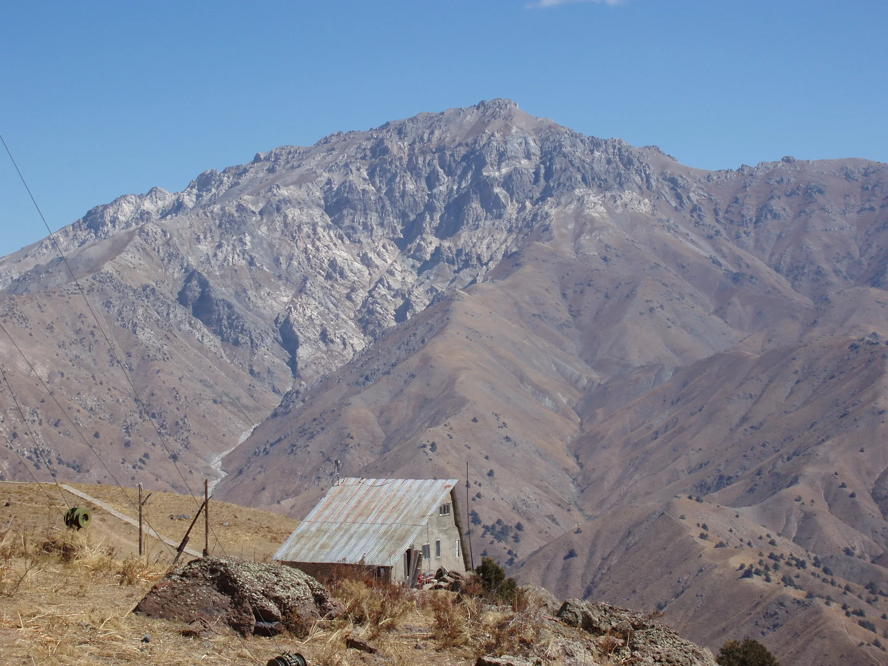
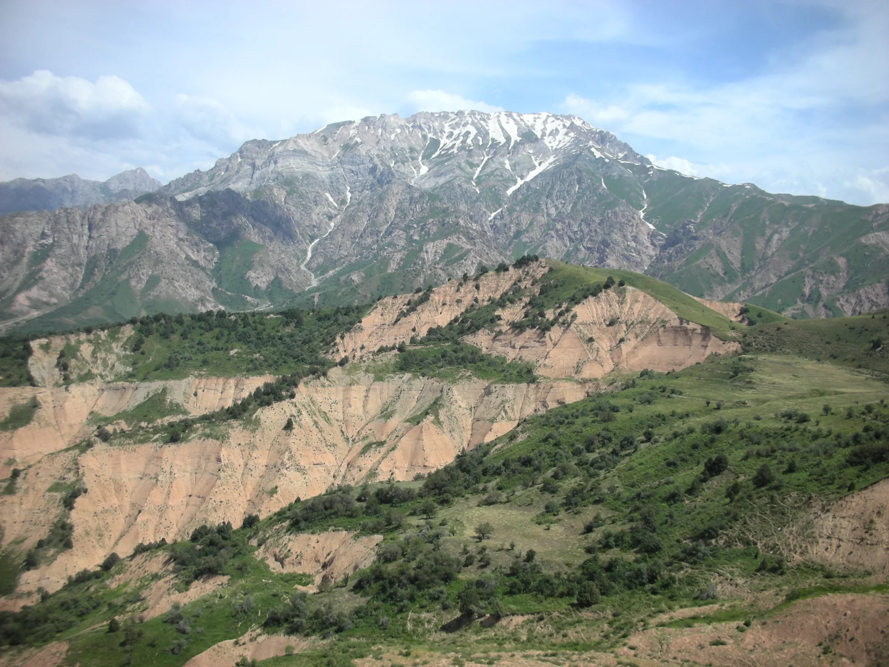
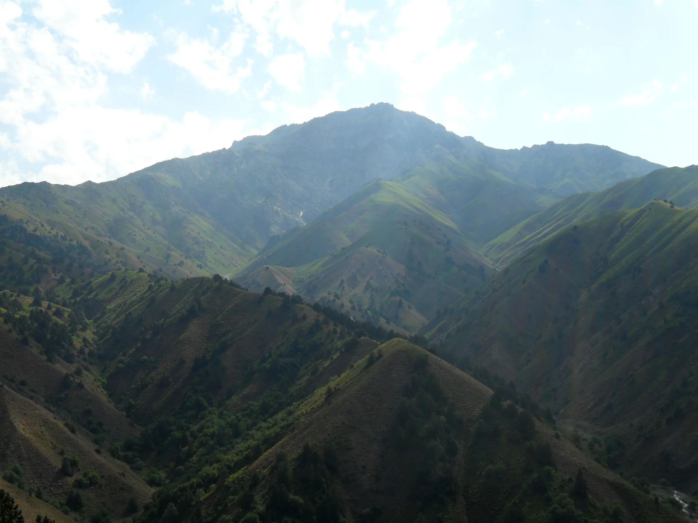
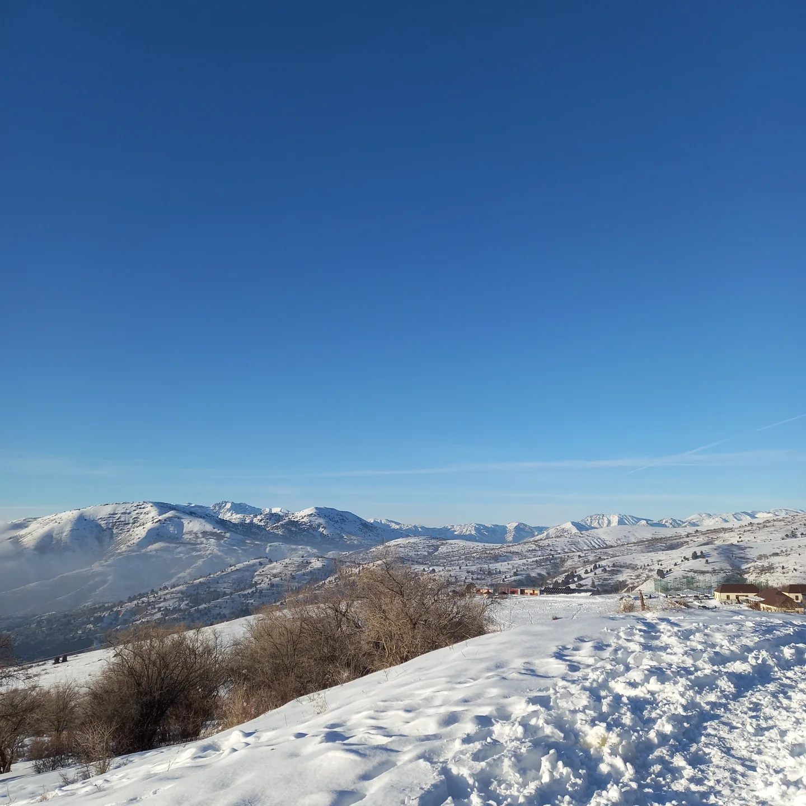
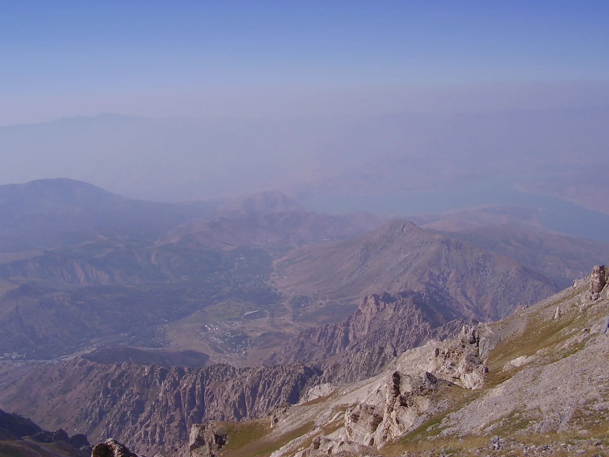
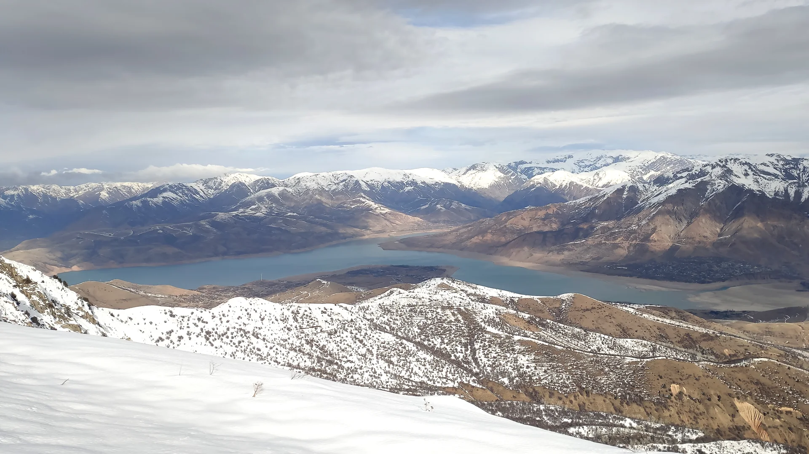

UZBEKISTĀNA.
Četri rīti kalnos. Trīs naktis teltīs. Neviena gida. Un puišu kompānija, kas pēc tam par šo runās gadiem.
GIDU*
 BELDERSAYplašas ielejas un pirmie kāpumi
BELDERSAYplašas ielejas un pirmie kāpumi
KUMBELpanorāmas uz Čimganas masīvu
ČIMGANAskarbs kalnu finišsĀrpus ierastā.
Piedzīvojums pa īstam.
Uzbekistāna ir vairāk nekā Zīda ceļa pilsētas. Pie Taškentas sākas kalni, kuros mēs varam paši izvēlēties tempu un vietu, kur vērot saulrietu.
Īsti kalni
Akmeņainas grēdas, ielejas, pārejas, augstuma metri un Čimganas masīvs līdz 3309 m.
01Savas teltis
Nesam ekipējumu paši. Nav viesnīcu kalnos, nav organizētu tūru un nav piesaistes grafikam.
02Pelnīta atpūta
Pēc kalniem: uzbeku plovs, Taškenta un — ja laiks atļauj — Samarkanda.
03Lai draugiem uzreiz ir skaidrs, par ko ir runa — te ir daļa no skatiem, kas raksturo šo apvidu: platas ielejas, akmeņainas pārejas, plaši skati uz Čimganu un Charvak pusi. Atver fotogrāfiju pilnekrānā un pārlūko skatus ar bultiņām. Attēli rāda dažādus gadalaikus; tie nav septembra apstākļu prognoze.

BELDERSAY IELEJAplaša ieeja kalnu rajonā
ČIMGANAS KALNImežonīgs reljefs visos gadalaikos
SKATS LEJUPto sajūtu gribas nofotografēt ik pēc 10 minūtēm
CHARVAK PUSEplašums un sauss kalnu dramatismsKur mēs pazudīsim?
9 dienas.
Viens labs stāsts.
Iespējamie datumi: 2027. gada 4.–12. septembris. Precīzas lidojumu dienas vēl jāsaskaņo.
✈ Ierašanās
Rīga → Taškenta. Plovs, pārtika, gāze, pārbaude.
⛺ Četras dienas kalnos
Beldersay, Nurekata, Kumbel apkārtne. 3 naktis teltīs.
🧭 Rezerves diena
Slikts laiks? Atpūta? Elastīga diena drošībai.
🍚 Pilsētas + mājas
Taškenta, iespējams Samarkanda, un lidojums mājup.
4 dienas. 3 naktis.
Klikšķini uz dienām un paskaties, kā varētu izskatīties mūsu kalnu posms ar trim naktīm teltīs.
Beldersay → Nurekata
Sākam ar pilnām mugursomām, pārejām un skatiem pāri ielejai. Vakarā meklējam iepriekš apstiprinātu nometnes vietu.
 KALNU KORESatsegti kores posmi un plašs horizontsVAKARI IELEJĀvakari pie teltīm un rīti ar sauli sejā
KALNU KORESatsegti kores posmi un plašs horizontsVAKARI IELEJĀvakari pie teltīm un rīti ar sauli sejā5:30 no rīta.
Kafija kalnos.
“Kurš vakar teica, ka šis būs viegls pārgājiens?”
Rīts
Uzvārām kafiju, savācam telti un ejam, kamēr kalnos vēl vēss.
Diena
Pārejas, panorāmas un obligātā fotografēšanās uz katra otrā akmens.
Nakts
Vakariņas pie degļa, tumšas debesis, un pārsteidzoši agra gulētiešana.
Cik maksā brīvība?
Pabīdi slīdņus — summa uzreiz pārrēķināsies. Bez gida un bez jauna aprīkojuma iegādes.
Transfēra pieņēmums: 300 € visai grupai; naktsmītnes/pilsētas ēdieni 90 €, apdrošināšana/rezerve 55 €, pārējais 35 € katram.
Tā ir plānošanas tāme, nevis aktuāls aviobiļešu piedāvājums. Rezervējiet papildu neparedzētu izdevumu rezervi.
Visu uz savas muguras.
Atzīmē, kas jau ir. Pārlūkā saglabāsim šos ķeksīšus šajā ierīcē.
Pieredzējušai grupai vajadzēs arī bezsaistes kartes, rezerves navigāciju, ārkārtas sakarus un laikapstākļiem atbilstošu siltumu. Degvielu pērciet uz vietas.
Izaicinoši ≠ bezatbildīgi.
Bez gida — jā. Bez plāna — nē. Pirms rezervējam biļetes, šiem jautājumiem jābūt atrisinātiem.
Nepārdodam sev fantāziju.
Iepriekšējie pārgājienu ieraksti pierāda, ka šajā reģionā cilvēki staigā ar teltīm, bet tas nepierāda, ka mūsu konkrētais 4 dienu savienojums ir drošs vai visur atļauts.
Latvijas ĀM ceļojumu informācija ↗Skatīt publiskos GPS ierakstus ↗Mūsu variants ir idejas prezentācija, nevis solījums, ka varam šodien doties bez papildu pārbaudes.
NU KO,
BRAUCAM?
Izvēlies savu atbildi. Pēc tam nokopē uzaicinājumu un iemet čatā.
Balsojums ir jautram efektam tikai šajā pārlūkā — draugu atbildes automātiski netiek apkopotas.
Bez pārspīlējumiem.
Ar labu plānu.
Pirms braucam — jāpārbauda
- Latvijas ĀM: Uzbekistāna — vīza, reģistrācija, robežzonas, brīdinājumi.
- Wikiloc: Nurekata takas — publiski pārgājienu ieraksti; nav drošības garantija.
- Beldersay → Gidjal ieraksta turpinājums — autors daļu ceļa brauca ar auto.
- Greater Chimgan fotogrāfiju kolekcija.
Attālumi, nakšņošanas punkti, septembra datumi un izmaksas ir provizoriski. Lapa nav GPS navigācijas rīks. Visas fotogrāfijas glabājas šīs vietnes assets/images/ mapē. Ārēji attēlu serveri nav nepieciešami. Ja fails nav pieejams, redzama skaidri marķēta ilustrācija.
Foto autori / licences
- Greater Chimgan Mountain — Dmitriy Page / Jabez, public domain.
- Kumbel to Chimgan — Man77, CC BY-SA 3.0.
- Beldersay valley — German Stimban, CC BY-SA 4.0.
- Spring Beldersay valley — German Stimban, CC BY-SA 4.0.
- Chimgan peak — German Stimban, CC BY-SA 3.0.
- Chimgan Mountains — Anvarov Bobur Baxtiyor o'g'li, CC BY-SA 4.0.
- View down to Chimgan — Denis vl, CC BY-SA 3.0.
- Skats uz Charvak no Mazās Čimganas — Галиев Ярослав, CC BY-SA 4.0.
Foto samazināti, pārveidoti WebP formātā un attēloti ar izgriešanu un tumšinošiem pārklājumiem. Atvasinātie foto saglabā katra oriģināla licenci. Pilni attēlu dati un licences ↗. CC BY-SA 3.0 / 4.0 fotogrāfijas atbilstoši šo licenču noteikumiem.